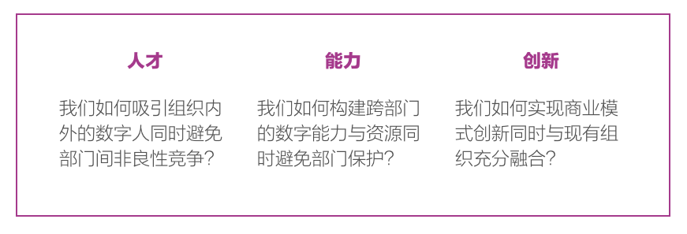
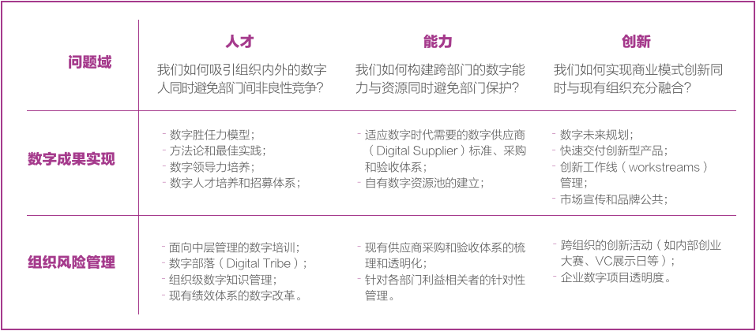

从去年开始，我开始和美国企业中的首席数字官（Chief Digital Officer）合作，这个在执行官（C-suites）中逐渐兴起的年轻职位，被认为是企业全面数字化转型的催化剂，而我所扮演的角色，则是「催化剂的催化剂」。
首席数字官在2012年逐渐兴起，其重要性，被认为将在2020年超越首席信息官（CIO）（参考）。然而，也有观点指出，首席数字官在企业内只有较短的生命周期，一个在数字领域成熟的企业，是不需要首席数字官的——英国报业巨头News UK的CTO Christina Scott尖锐地指出：「首席数字官只是表示这个企业的首席信息官在数字领域的捉襟见肘。」（参考）
首席数字官兴起的同时，公司也在出现大量前所未有的执行官职位，从可口可乐拗口的首席持续发展官（Chief Sustainability Officer）到戴尔公司的首席倾听官（Chief Listeners）。
《Your Marketing Sucks》的作者Mark Stevens对福布斯杂志（参考）谈到最近出现各种新CXO时说：「就像是幼儿园过家家的游戏，这些人通常没有任何权利。」
无论这些看起来新潮的名字如何变化，最终的权利通常把握在首席执行官（CEO）、首席运营官（COO）、和首席财务官（CFO）手中，大部分时候，这些新任的执行官都是为了补充企业目前短板而设立。
现实的确如此，一方面在数字浪潮中，首席数字官成为行业新星，另一方面这个「新任的」高管，也在与现有角色、以及其他新任角色产生冲突。理解这种冲突，是和首席数字官工作的第一步。
理解冲突
德勤在一份关于首席数字官的研究报告中这样描述首席数字官的三大职责：
- 帮助其他数字背景的中层管理人员成长和晋升；
- 集中散落在组织各处的数字资源和能力；
- 打破现有桎梏进行创新。
这三大职责对于一位新任的首席数字官而言通常都面临着不小的挑战，即其中任何一项都必须打破现有的组织结构和流程。
首先我们来看撬动数字人才成长和晋升，对于每一个部门而言，数字时代所需要的人才基本都已经成为各部门的培养对象，这种撬动通常显得多此一举，一个企业内现有人才可能难以放弃现有职业路径改弦更张，这也是为什么一个新任首席数字官通常选择重新招募核心团队的原因，事实上，这种内部挖角更可能引起部门间的警觉和误解。
再看集中数字资源和能力，在设置首席数字官之前，组织已经自生出一套数字生态，最显著的特点是「稳定的供应商」——每个部门都已经有各自的供应商补充数字能力，而供应商背后又有部门领导者各自的利益相关，打破现有供应商体系，尝试整合，通常是首席数字官最常碰到的挑战。
最后看突破式创新，打破现有桎梏意味着可能全新的供需关系、内部流程、以及新的能力模型，这必然引起其他部门的消极合作甚至挑战，然而完全不考虑与现有业务集成的创新，具备突破性，却难以持续，便极难形成规模。
因此最普遍的情况是，首席数字官难以形成内部核心团队、难以引入或更换供应商、难以实现具有商业价值的创新，企业的数字转型举步维艰。
巨大挑战之于我的工作，则是极大的机会。
构建价值
和首席数字官的工作必须围绕在其前所未有的挑战上来。如果用设计挑战的方式，我们将这样描述首席创新官的需求：

仔细分析这些设计挑战，前部分通常容易达成，真正的难度在后半部分，例如招募人才易、避免人才竞争难；构建能力易、避免部门保护难；交付创新易、形成持续演进、建立深植于企业的商业模式难。
因此我们的服务必须得考虑两个部分，第一个部分是外在效果（Champion Digital Leadership），第二个部分则是降低现有组织带来的风险（Mitigate Organizational Risk ）。以下是我所思考的矩阵：

这个价值体系的最终结果，正如HBR在《We Need Better Managers, Not More Technocrats》一文中对数字转型的目标所做的阐释：
- 构建数字时代的转型愿景；
- 与雇员一起实现这个愿景；
- 通过数字治理疏浚企业数字资源；
- 打破领导层壁垒。
写在最后
数字时代对于企业而言是供需关系的重大变革，传统企业组织架构正在发生从下至上的变化；对于数字人才的大量需要，也决定了全新的管理方式。首席数字官的职责，是应对需求端出现的变革、推动组织变革、构建能力、疏导资源、调整优先级、最终实现组织在数字时代的转型。
在设计为首席数字官的服务时，应重复考虑这份工作的两个核心目标，一是数字成果、二为组织适应，前者谈论上线、后者保证底线，二者缺一不可。